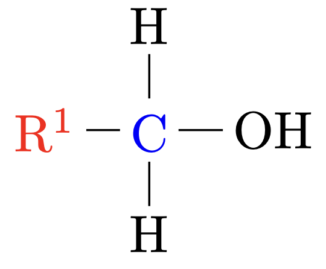
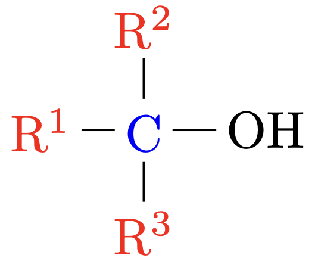

Alkohole
Grundlagen
Alkohole sind Stoffe deren Moleküle eine Hydroxygruppe $\ce{R–OH}$ enthalten.
Als funktionelle Gruppe bezeichnet man die polare Hydroxygruppe. Sie hat groβe Auswirkungen auf physikalische und chemische Eigenschaften.
Trinkalkohol
Ethanol bezeichnet man als Trinkalkohol
Alkanole
Alkohole, in deren Molekülen keine andere funktionelle Gruppe auβer der Hydroxygruppe vorhanden ist bezeichnet man auch noch als Alkanole.
Homologe Reihe der Alkanole
Name |
Summenformel |
Halbstrukturformel |
|---|---|---|
Methanol |
$\ce{CH4O}$ |
$\ce{CH3-OH}$ |
Ethanol |
$\ce{C2H6O}$ |
$\ce{CH3-CH2-OH}$ |
1-Propanol |
$\ce{C3H8O}$ |
$\ce{CH3-CH2-CH2-OH}$ |
1-Butanol |
$\ce{C4H10O}$ |
$\ce{CH3-CH2-CH2-CH2-OH}$ |
1-Pentanol |
$\ce{C5H12O}$ |
$\ce{CH3-(CH2)4-OH}$ |
1-Hexanol |
$\ce{C6H14O}$ |
$\ce{CH3-(CH2)5-OH}$ |
1-Heptanol |
$\ce{C7H16O}$ |
$\ce{CH3-(CH2)6-OH}$ |
Formel
Allgemein gilt für Alkanole:
$$ \ce{C_nH_{2n+1}OH} $$Isomere
Primäre Alkohole |
Das $\ce{C}$-Atom welches die $\ce{OH}$-Gruppe trägt ist mit einem anderen $\ce{C}$-Atom verbunden. |
 |
Sekundäre Alkohole |
Das $\ce{C}$-Atom welches die $\ce{OH}$-Gruppe trägt ist mit zwei anderen $\ce{C}$-Atom verbunden. |

|
Tertiäre Alkohole |
Das $\ce{C}$-Atom welches die $\ce{OH}$-Gruppe trägt ist mit drei anderen $\ce{C}$-Atom verbunden. |
 |